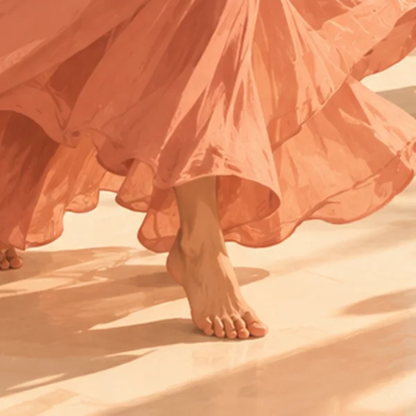
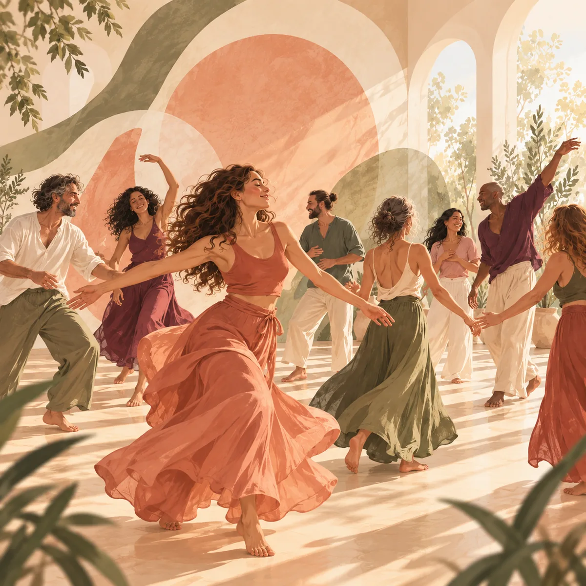

זזים
מוזיקה טובה ותרגילים פשוטים שמוציאים מהראש ומכניסים לגוף
המפגש הבא
יום ראשון 25.10 20:00 הרצליה
7 מתוך 30 נרשמו
80 ₪
הנחת הרשמה
מוקדמת
הזמנה
להכיר אנשים חדשים, בלי לחפש מה להגיד. פשוט לזוז יחד, ליהנות ולתת לחיבור להתחיל
נשים וגברים בגילאי 40–49 בפרק פתוח בחיים, בתקופה של שינויים, עם רצון לתנועה חדשה
מוגבל ל-30 משתתפים בלבד
אבל כן ערב שאפשר להכיר בו אנשים חדשים
השגרה מתמלאת באנשים שאנחנו כבר מכירים, ופחות יוצא לנו לפגוש אנשים חדשים שנמצאים במקום דומה בחיים
וכשיוצאים קצת מהמוכר, נפתחות אפשרויות למפגש אחר, טבעי יותר, עמוק יותר, וכזה שלא תמיד פוגשים ביום יום
ומתוך כל זה יכולות לצמוח חברות, קרבה ואולי גם אהבה

מוזיקה טובה ותרגילים פשוטים שמוציאים מהראש ומכניסים לגוף
מגע קטן, מבט, רגע משותף. מפגש אחרי מפגש, הקשר נבנה לבד
פוגשים את עצמנו מחדש, וכל מפגש מלמד משהו חדש
הסבר קצר על מה שהולך לקרות ושיתופים מהמפגש האחרון
מתרגלים ונכנסים לחוויה שהיא בעצם הרפתקה קטנה
שובבות וכיף, הרבה תנועה, והדופק עולה
הקצב יורד, נכנסים פנימה, והלב נפתח
כאן הקסם מתחיל לקרות
הקצב עולה שוב, ויוצאים ערניים ומלאי חיים
וממשיכים מאותה נקודה
הביודנסה משלבת מוזיקה, תנועה וקשר אנושי כדי לטפח תחושת חיות, ביטחון ופתיחות. החוויה מזמינה אותנו להקשיב למה שאנחנו מרגישים, לבטא את עצמנו ולהרגיש בנוח עם אחרים. את מה שחווים במפגשים אפשר לקחת גם ליומיום, ליחסים שלנו ולדרך שבה אנחנו פוגשים את החיים

חוקרת את החיבור בין גוף, רגשות ותקשורת. מנחה תנועה, תקשורת מקרבת, יוגה ומדיטציה, ומביאה לקבוצה רגישות ועומק
שיחה עם הדריוצר ומנחה מפגשי מוזיקה, תנועה ושירה. לומד ומעמיק בדרך שבה מוזיקה ותנועה מקרבות בין אנשים, ומביא לקבוצה חום, משחקיות וגובה עיניים
שיחה עם אופירמרחב לזוז, להרגיש ולהיפגש
קבוצה חדשה נפתחת, ומספר המקומות מוגבל
מוגבל ל-30 משתתפים בלבד
ממש לא. המטרה היא לא לרקוד יפה, אלא פשוט לנוע
בחלק מהתרגילים יכולה להיות הזמנה למגע עדין, בדרך כלל אחיזת ידיים. כל מגע הוא אופציונלי ובהסכמה, ואפשר לבחור שלא להשתתף בלי צורך להסביר
זה טבעי, וזה חלק מהעניין. כולנו מתחילים מאותה נקודה. עם הזמן נרגעים, וצומח משהו חדש: אמון, קלילות וחיוך שבא מעצמו
לא. המשתתפים נמצאים כרגע ללא זוגיות, אבל אין שום ציפייה שמשהו צריך לקרות
בגדים נוחים שקל לזוז בהם. כדאי להביא גם בקבוק מים